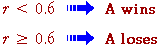

Generating categorical values
Simulations are usually based on a sequence of independent values from a rectangular distribution where every value between 0 and 1 is equally likely. We assume that we can generate such a sequence of random values r1, r2, ...
A random categorical value (an 'outcome') can be generated from any such rectangularly distributed value, r. Consider a point in a tennis match where P(A wins) = 0.6. If we generate points with the rule,
win/lose">
then the result 'A wins' will occur with probability 0.6, as specified in the model.
The process is illustrated below. If the random number generated is below 0.6 (in the blue region of the jittered dot plot), the categorical outcome that is generated is 'A wins'.
Click Next Value a few times to generate results from successive points. Observe that about 60 percent of the crosses in the jittered dot plot lie in the blue region and therefore the outcome 'A wins' occurs about 60% of the times.
Use the slider to adjust the probability of A winning and observe how this affects the mapping of random numbers into categories.
A similar method can be used to generate categorical values when there are three or more possible outcomes. The interval between 0 and 1 is allocated to the possible outcomes in proportion to their probabilities, and random numbers generate categorical outcomes based on the sub-intervals in which they fall.
This is illustrated in the diagram below.